逐秒帧附录 · 玩法架构证据图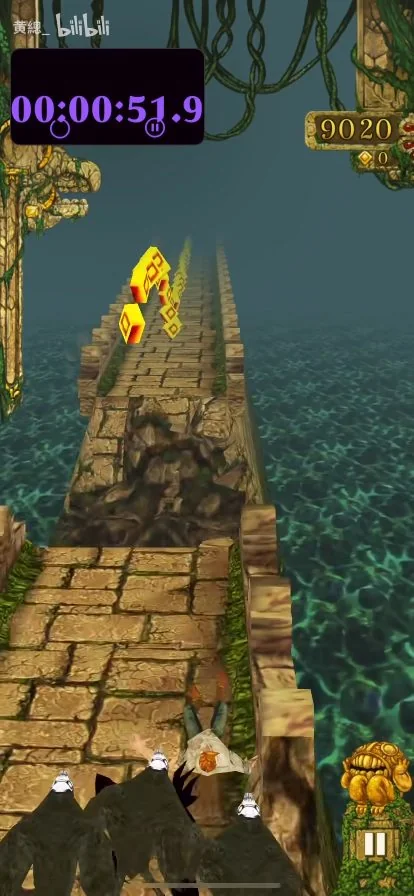
54s · 石桥
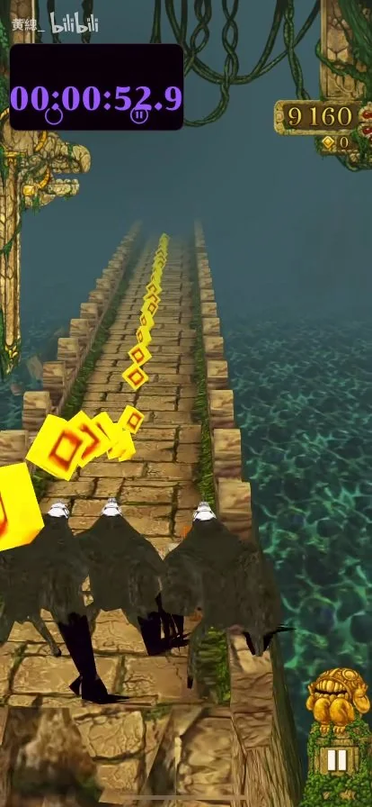
55s · 石桥
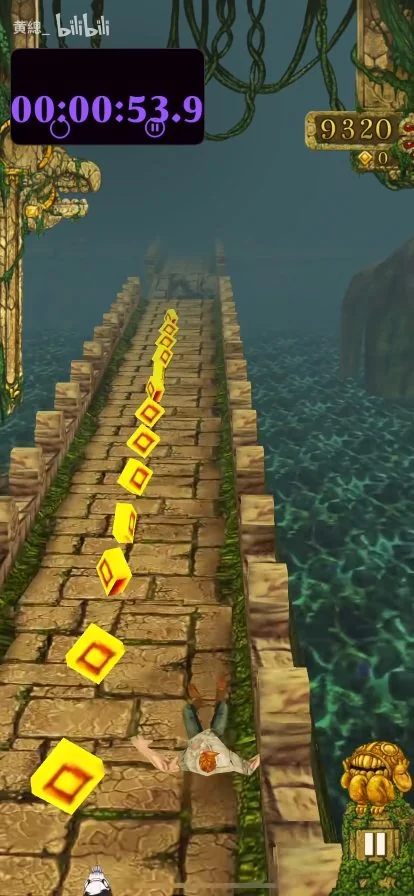
56s · 石桥
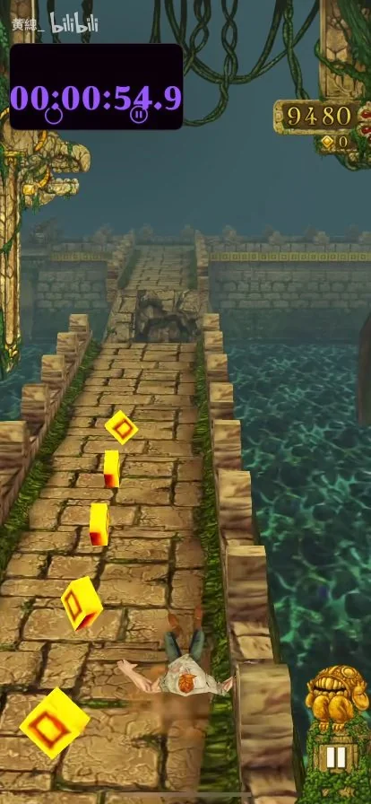
57s · 石桥
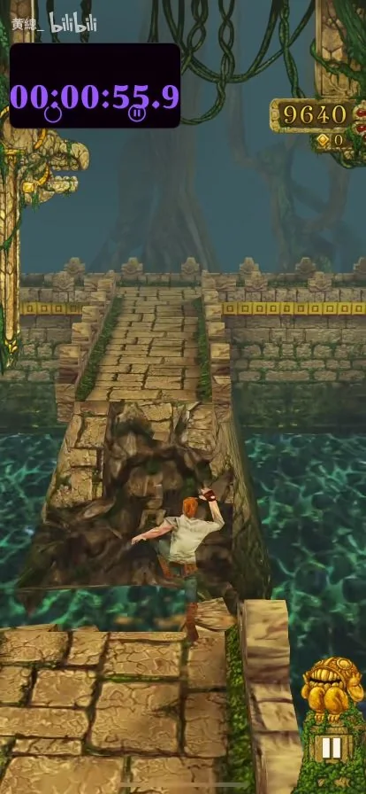
58s · 石桥
断裂路面与跳跃。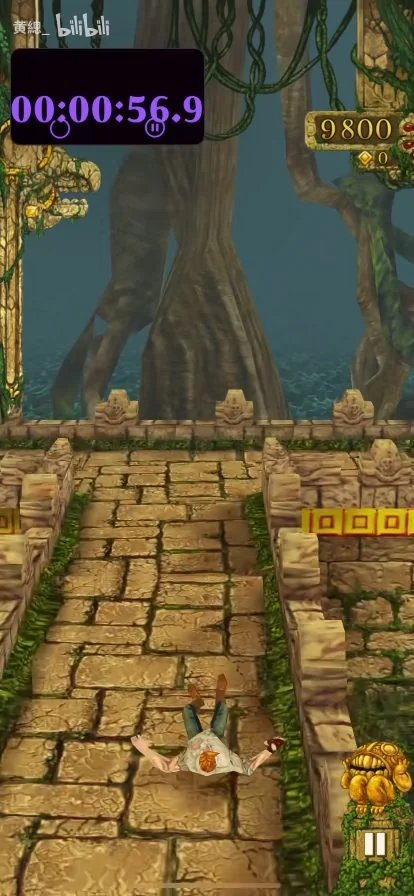
59s · 石桥
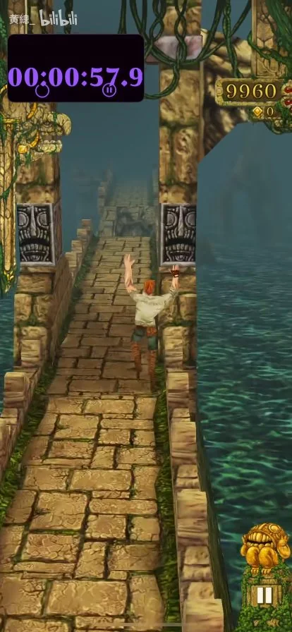
60s · 石桥
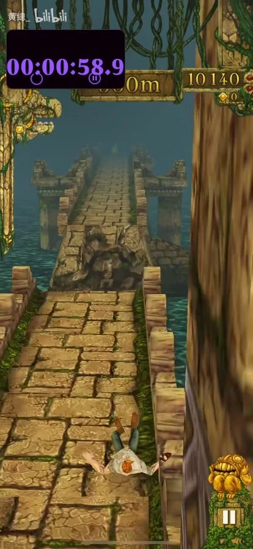
61s · 石桥
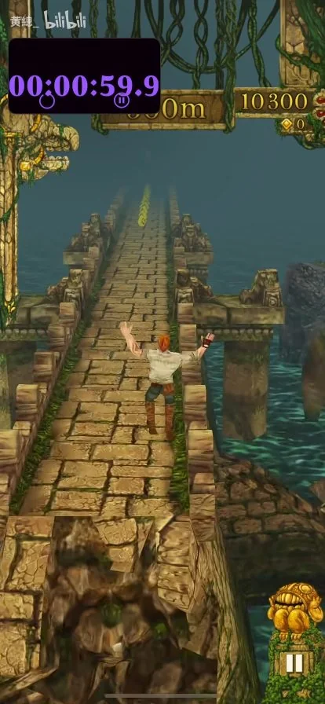
62s · 石桥
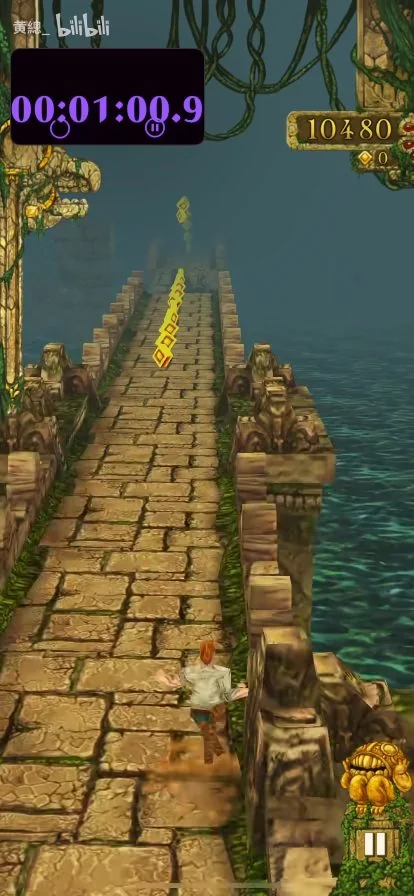
63s · 石桥
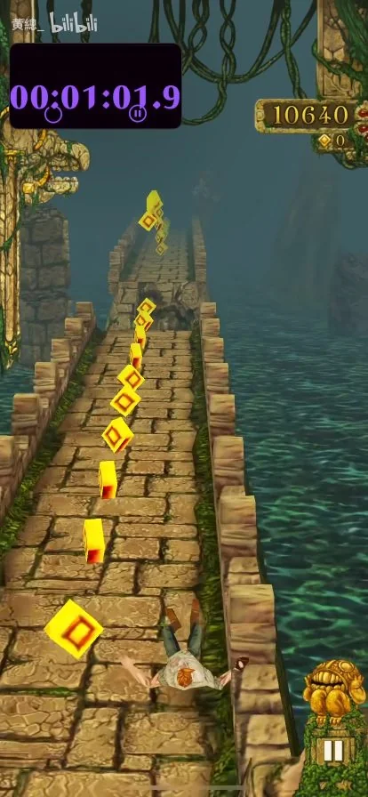
64s · 石桥
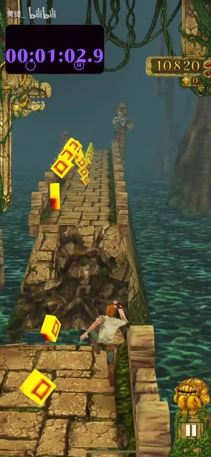
65s · 石桥
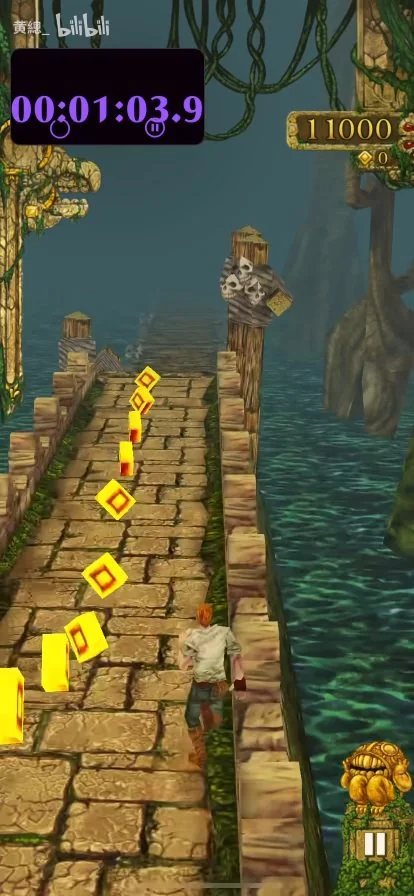
66s · 石桥
 67s · 木桥
67s · 木桥
石桥转入木桥；边缘立柱带骷髅装饰。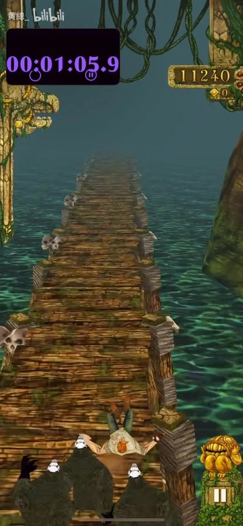
68s · 木桥
连续木板桥面，两侧露出水面。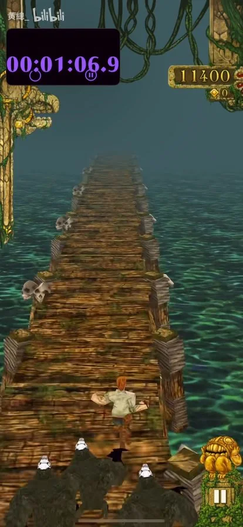
69s · 木桥
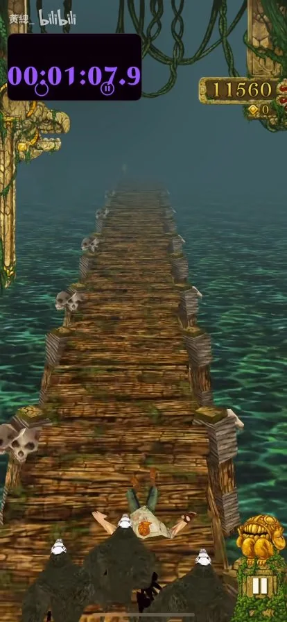
70s · 木桥
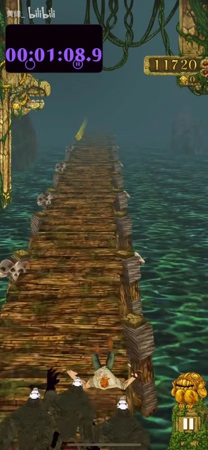
71s · 木桥